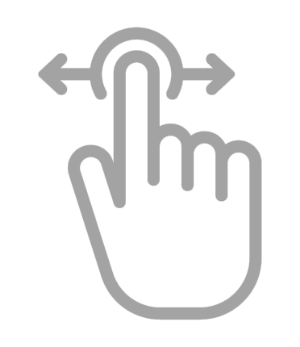
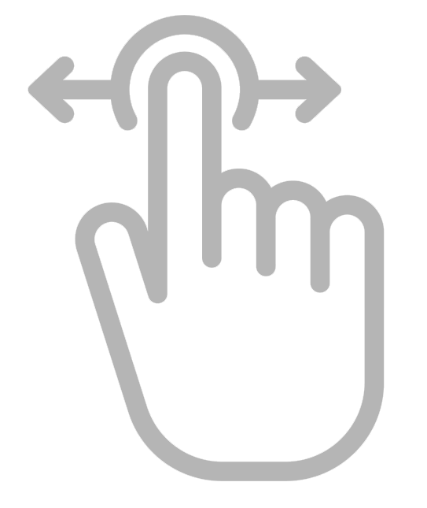

Has scroll para ver a los partidos y candidatos
Información del partido o candidato elegido
Analizamos los planes, sintetizamos la información con ayuda de la IA y lo verificamos editorialmente. Ahora podrás elegir un candidato o partido, filtrar por tema, mirar resúmenes y detectar de un vistazo qué proponen, qué omiten y qué no cuadra. Disminuimos el ruido para ofrecerte más claridad para que estés bien informado antes de emitir tu voto.
Actualizado al 28/10/2025Elige la opción que prefieras para iniciar
Encuentra resúmenes claros de cada plan y accede a una versión concisa de los temas principales que aborda.

Selecciona hasta 3 candidatos y contrasta sus propuestas por tema, tono y coherencia. Además, incluye un breve fact-checking.
¿Qué tan ciertas son las propuestas? Nuestro equipo eligió 3 frases clave por plan y las sometió a verificación. Aquí verás qué se dijo, qué dicen los datos y cómo lo comprobamos, con un veredicto al final.
Cargando datos...
Descubre en segundos los datos que mejor explican las propuestas
 Has scroll horizontalMientras el plan más completo abarca 17 ejes y el más escueto se limita a solo 3. El promedio general se sitúa en 14 temas por partido.
Muchos temas indican amplitud, no necesariamente mejor sustento.
Cuatro temas figuran en la agenda de casi todos los partidos: Economía, Educación, Infraestructura y Salud. Son el eje base de sus propuestas.
Alta presencia = tema transversal en la agenda.
Temas como Familia, Cultura y Transporte aparecen de forma escueta o son ignorados por las agrupaciones.
Baja presencia ≠ irrelevancia
La Economía (14.2%) y los Programas Sociales (13.8%) dominan la narrativa, consumiendo casi un tercio del texto total de los planes. Les siguen Salud y Justicia.
Más porcentaje = más espacio, no mejor propuesta.
Pese a su importancia ciudadana, temas como Transporte (1.2%) y Cultura (1.4%) ocupan un espacio insignificante en la redacción de los documentos.
Poco espacio no representa calidad.
La Economía no solo es transversal, sino que es el tema que acapara el mayor volumen de palabras (14.2%) en el promedio nacional.
Muestra prioridad, mas no la profundidad.
Aquí verás la variedad de áreas tratadas en el plan. Un plan con muchos temas ofrece una mayor cobertura, aunque no siempre puede entrar en detalle ni mostrar sustento en cada área.
Descubre el porcentaje del plan que ocupa cada tema. Más espacio no implica mayor concreción ni mejor sustento.
Mide en cuántos partidos aparece cada tema. Un valor más alto indica un tema más transversal en la agenda. No evalúa detalle, coherencia ni evidencia.
Este especial se basa en información pública de los planes de gobierno que cada partido suministra al JNE. Los documentos se procesaron con el programa de automatización n8n para su lectura, limpieza, estandarización y unificación. El contenido se clasificó por temas con asistencia de IA y se calcularon indicadores como diversidad temática, densidad discursiva y prevalencia. Para los resúmenes finales se emplearon modelos de OpenAI y Gemini, con edición y validación editorial antes de la publicación. El resultado es una síntesis comparable y clara, pensada para consulta rápida sin perder rigor.
Para caracterizar el tono y la coherencia se aplicó un enfoque de análisis del discurso político (referencias: van Dijk, Fairclough, Habermas) y coherencia programática (Klingemann et al.). El tono se etiqueta por fragmento como: Técnico (gestión pública, evidencia, indicadores), Ideológico (valores, principios, identidad), Pragmático (acciones viables, implementación) o Social (inclusión, bienestar, equidad). La coherencia interna se valora en Alta / Media / Baja según el alineamiento entre diagnóstico y medidas, la ausencia de contradicciones y la claridad de metas.
Investigación y textos:
Gisella Salmón
Mayté Ciriaco
Lorena Obregón
Diseño:
Marcelo Hidalgo
Ilustraciones y animación:
Kiomy Kanashiro
Programación:
Armando Scargglioni C.
Edición visual:
Angela Peña
Producción general:
Gisella Salmón
Director periodístico:
Juan Aurelio Arévalo